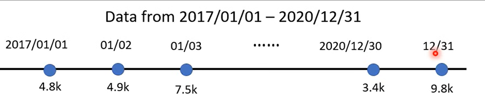
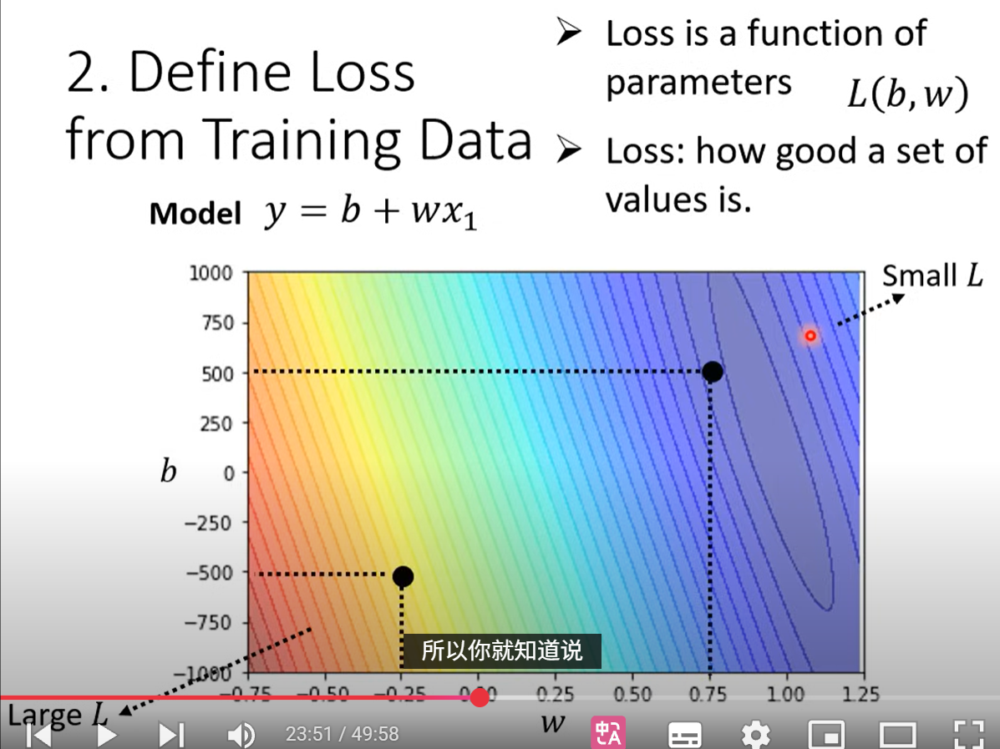
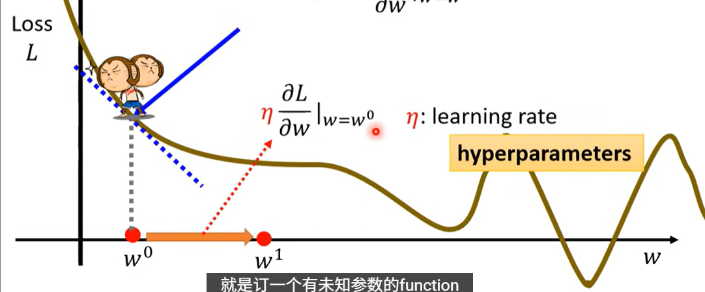
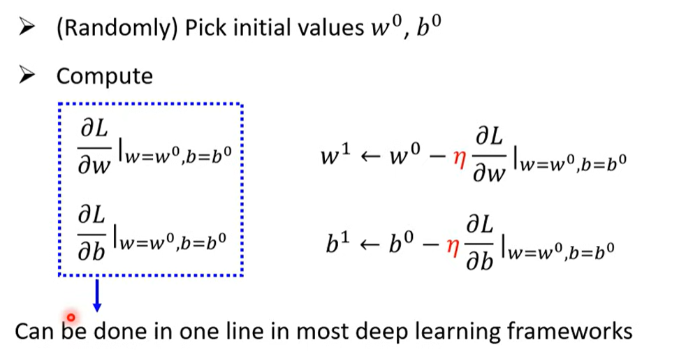
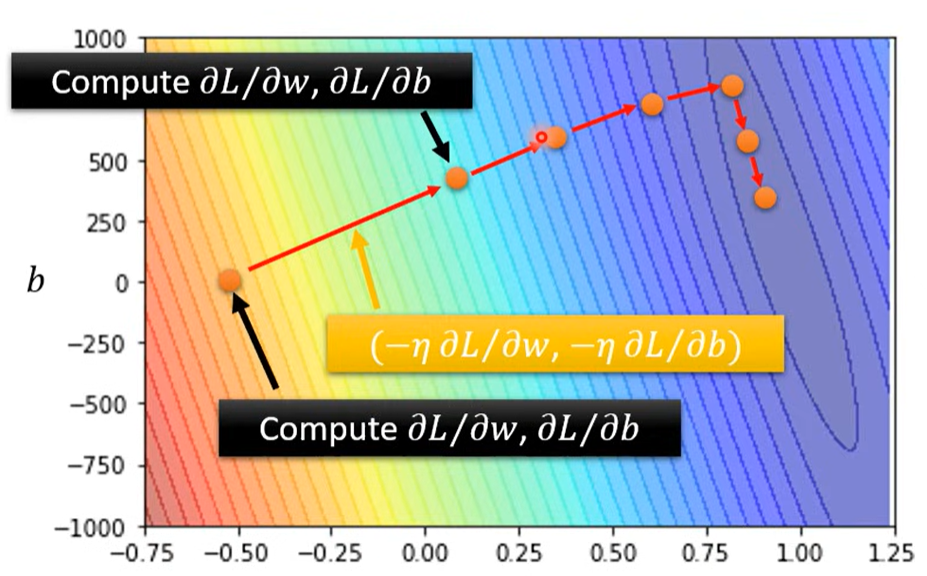
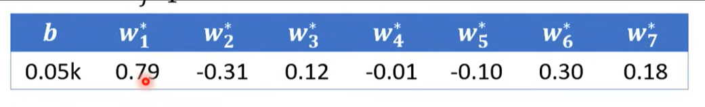

序章1
1.how to find a functio-n
设置一个合理的模型：$y=b+wx_1$
其中 $b$ 称作 bias，$w$ 称作 weight。
2.Define Loss from Training Data
loss is a function of parameters $L(b,w)$
loss代表的是一组参数对于预测这个的任务好还是不好。
ex:
以1月2号为例
$L(0.5k,1)\quad y=b+wx_1 \rightarrow y =0.5k+1x_1$
$0.5k+1x_1=y = 5.3k$
$e_1 = \lvert y-\hat{y}\rvert = 0.4k$
此处$\hat{y}$即为label，
loss的具体介绍看单独的那个吧

这个图很长一段时间内我都不是很理解，横轴为weight（$w$）,纵轴为bias（$b$)图上的颜色的亮度代表Loss的大小；等高线图叫做error surface
3.optimization 优化
就是接着上面的任务，寻找最合适的 $w$ 和 $b$ 来使loss最小。此例子中使用的是:
gradient descent :
单参数：
- 随机选取初始点 $w^0$
- 计算微分 $\frac{\partial L}{\partial w}$ 在 $w=w^0$时（即在曲线$w^0$处的切线斜率）
- 任务就是 $arg \displaystyle\min_w L$
- 不断更新 $w$

此处参数移动的方向的步伐大小是靠超参数 学习率learning rate（$\eta$） 来定义的。
局部最优解 local minimal 在batch size那个里面有
双参数例子：
（懒得打公式了)
$Model:y = b + wx_1$
$w^,b^=arg\displaystyle\min_{w,b} L$


4.延申
上面的例子里面是只根据前一天的观看人次来预测后一天，但是根据规律可以发现是7天一循环，那么我们可以用前7天的观看次数来预测。
即$y=b+\displaystyle\sum_{j=1}^{7} w_jx_j$
